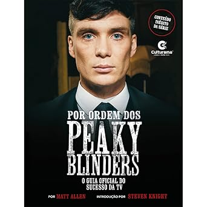

|
 |
Peaky Blinders O aclamado drama da Netflix sobre a gangue mais notável de Birmingham ganha seu derradeiro final com o filme Peaky Blinders - O homem imortal… Mas o que realmente há por trás da série e do filme? Como viviam os Peaky Blinders reais, nessa cidade industrial do norte da Inglaterra? Conheça a origem dessa história, contada por alguém cuja família conviveu com os próprios Peaky Blinders ― em uma obra que inclui fotos históricas dos verdadeiros integrantes da gangue e depoimentos históricos sobre eles! Os Peaky Blinders que conhecemos graças à série de TV transbordam drama e medo. Elegantemente vestidos, os carismáticos ― mas profundamente falhos ― Thomas Shelby e aliados se tornaram famosos por seus feitos atrozes, cujos desdobramentos resultaram em guerras sangrentas contra gangues irlandesas, em embates contra autoridades, em esquemas de extorsão de dinheiro e no competitivo ambiente de apostas legais e ilegais nas pistas de corrida de cavalos na virada do século XIX para o XX. |
| ★★★★★ Faixa etária: 12+ R$ 39,90 | |